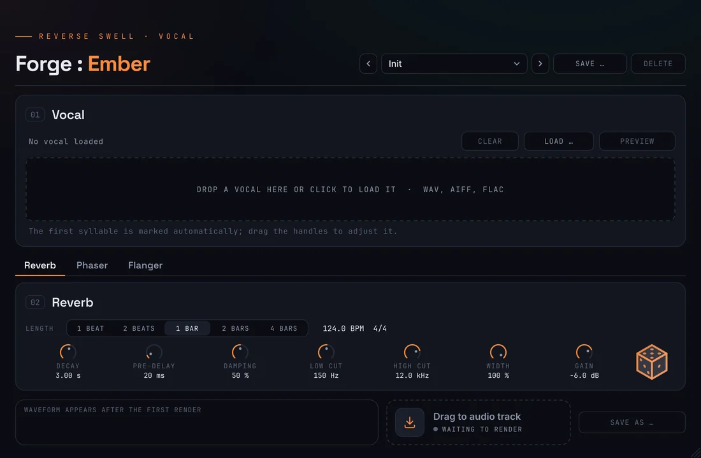
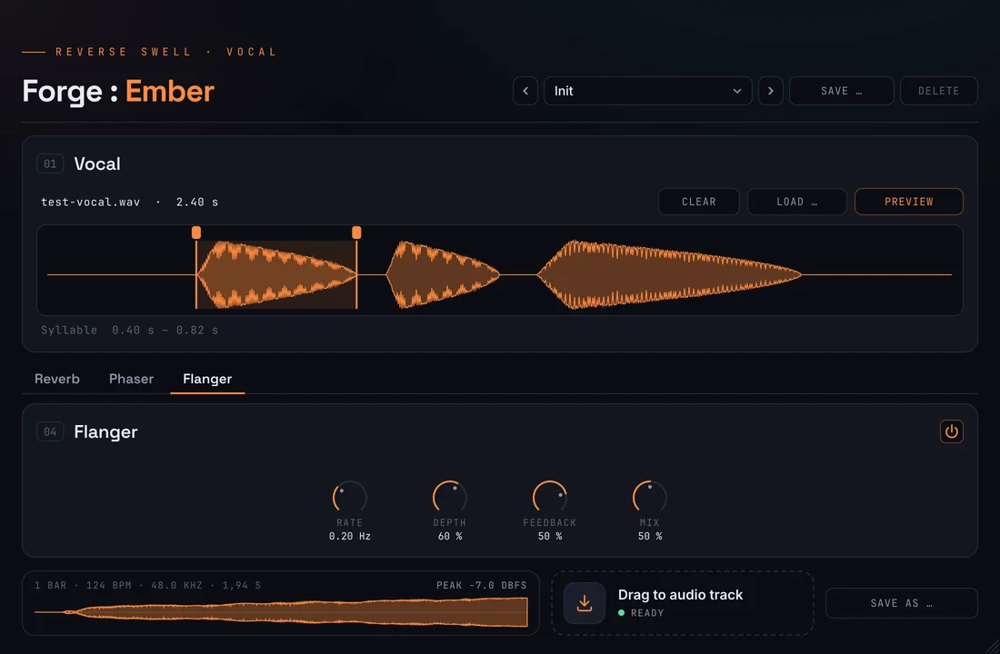

Scot & Millfield Forge · DocumentationForge :
Ember
Breathe in
before the vocal.
Crafted deep in the Ruhr, from coal and steel.

1 drop
1 beat–4 bars
3 effects
5 factory presets
0 samples off
Documentation
How it
works
Ember takes the first syllable of a vocal, reverses it, sends it through a reverb and reverses the result again. What rang out after the syllable now leads up to it: a swell that breathes in and ends exactly where the voice comes in. Pick a topic.
01 / Installation
Set up
on Windows
Ember comes as a ZIP: ScotMillfieldForgeEmber_<version>.zip. A .vst3 is a folder. It runs in every DAW on Windows 10 or 11 (64-bit) that loads VST3 instruments. Windows only for now; a macOS version is in the works.
ScotMillfieldForgeEmber.vst3 to C:\Program Files\Common Files\VST3\.Needs administrator approval02 / Load a vocal
Drop it,
check the syllable
Drop a vocal anywhere on the window or click Load … – WAV, AIFF or FLAC up to 120 seconds, mono or stereo. Ember marks the first syllable for you.

The first syllable
- Found for you: Ember follows the level of the vocal. The syllable starts where the voice rises clearly above the noise floor – a soft attack like “mm” or a breath belongs to it. It ends at the first clear dip before the next syllable, or where the vocal falls silent.
- Handles: drag the two handles above the waveform to move start and end. The line below shows the syllable in seconds.
- Limits: at least 60 ms and at most one second; a long held vowel gets 0.3 seconds. Syllables that run into each other without any dip are not split – move the end handle by hand.
- Preview plays the swell and then the vocal from the syllable on, so you hear the transition. Before the first swell is rendered it plays the vocal.
- Clear removes the vocal, the syllable and the swell. The reverb settings stay.
In your project
- The project stores the path of the vocal and the syllable, not the audio. When you open the project, Ember reads the file again. If it has moved, a red note says so – load it again.
- Dragging a clip from your DAW into Ember works in most DAWs; some hand over the whole source file instead of the cut part. Then move the handles to the syllable you want.
03 / Tab Reverb
The
swell
The reverb is computed for this one syllable, wet only, with a tail grown from noise – so it sounds dense and smooth even at long lengths. The same settings always give the same file.
Length
1 Beat, 2 Beats, 1 Bar, 2 Bars, 4 Bars at the project tempo – a beat is one note of the time signature (an eighth in 6/8). The file is exactly this long, to the sample, and ends directly before the syllable. So it sits on the grid: with 1 Bar, place it one bar before the vocal comes in.
Knobs
- Decay: how long the reverb rings (0.3 to 20 s). Longer than the swell, it already sounds at the start of the file; shorter, it stays quiet longer and rises steeply just before the vocal.
- Pre-Delay: a gap between the end of the swell and the vocal (0 to 250 ms).
- Damping: how much faster the highs fade than the lows – more damping, a darker, softer swell.
- Low Cut · High Cut: keep the swell out of the bass and tame the top.
- Width: from a mono reverb to fully independent left and right.
- Gain: the swell is first set to a peak of −1 dBFS, then Gain applies (default −6 dB). So its level does not depend on how loud the take is.
Every change reaches your DAW as a parameter change: automatable, and undoable where the DAW supports it. The parameters appear as “Ember …”.
04 / Phaser & Flanger
Set it
in motion
Two effects on the finished swell, each with its own tab and a power switch at the top right. Both are off by default; the level stays the same when you switch them on.
Phaser
Six all-pass stages sweep moving notches through the swell, up to three octaves around 800 Hz. Rate sets the speed (0.05 to 4 Hz), Depth the range, Feedback the sharpness of the notches, Mix dry against wet – 50 % gives the deepest notches.
Flanger
A short, wandering delay of 0.3 to about 7 ms gives the jet-like sweep. Negative Feedback sounds hollow, positive metallic. Rate, Depth and Mix as with the phaser.
Stereo
On the right channel both effects run a quarter cycle ahead, which widens the swell. Rate is in Hz, not in tempo: the swell is a finished file, and its movement stays the same whatever length you choose.

05 / Export
Onto the
audio track
Ember renders the swell in the background 0.3 seconds after the last change. The waveform in the foot shows length, tempo, sample rate and peak.
How it works
- Load the vocal and check the syllable.
- Drag the tile Drag to audio track onto an audio track – so that its end meets the start of the vocal. With 1 Bar: one bar before.
- Or use Save as … for a copy anywhere you like.
The file
- WAV, 24 bit, stereo, at the project tempo and sample rate (the standalone test version uses 48 kHz).
- Exactly the chosen length; the last sample sits directly before the first sample of the syllable.
- Only the swell – no vocal in it. Keep your vocal on its own track.
- Name:
Ember_1Bar_124BPM_<vocal>.wav– length, tempo, name of the vocal file. - Files are written to
%TEMP%\SM-Forge\and cleared after seven days – let your DAW copy imported audio into the project folder.
06 / Presets & Magic Cube
Factory presets &
a roll of the cube
Presets store the reverb and the effects – not the vocal and not the syllable. The preset bar sits at the top right, as in Furnace.
Magic Cube
- The cube at the right of the reverb knobs rolls a new reverb at once: decay, pre-delay, damping, cuts and width within musical ranges. In about every third roll it switches on the phaser or the flanger.
- Length and Gain stay as you set them.
- Every roll has a number; the name “Magic 48213” shows in the preset bar. Save … keeps it as your own preset.
Your own presets
- Save … stores the current settings under a name; Delete only works on your own presets.
- Location:
Documents\Scot & Millfield Forge\Presets\Emberas XML.
07 / Tips
When something
gets stuck
The swell starts too early
The decay is longer than the swell, so it sounds from the first sample on. Turn Decay down for a later, steeper inhale – or choose a shorter length.
A gap before the vocal
That is the Pre-Delay. Turn it to 0 ms for a swell that runs straight into the voice.
The wrong syllable
Move the handles. If the start sits too early because of noise before the take, drag the left handle to where the voice begins.
No sound on preview
Select the instrument track with Ember and switch on monitoring or record-arm, so your DAW plays the instrument. Without an activated license Ember stays silent.